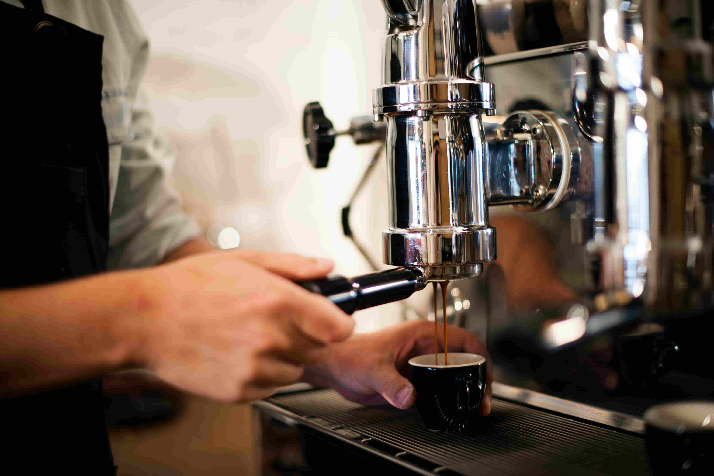

Tarinamme
Aurora Brew Lab on vaasalainen pienpaahtimo ja kahvila, joka panostaa käsityöläiskahviin ja paikalliseen tunnelmaan. Perustajamme Milla Nymanin idea kahvilasta sekä paahtimosta syntyi pienestä haaveesta paahtaa oma aamukahvi. Vuosien varrella tästä inspiroituneena Milla alkoi perehtyä kahviin yhä syvemmin. Hän opetteli tunnistamaan eri papujen makuja, paahtoasteiden eroja ja valmistusmenetelmien vaikutuksia. Hän matkusti, maistoi, kyseli ja kokeili itse. Kahvista tuli hänelle enemmän kuin juoma, siitä tuli käsityötä, tarinoita ja ihmisten kohtaamisia.
Ajatus omasta kahvilasta syntyi halusta jakaa tämä maailma muiden kanssa. Hän halusi luoda paikan, jonne kaikki olisivat tervetulleita tutustumaan tarkemmin kahvin paahtamiseen sekä viettämään aikaa arjen keskellä.
Niin syntyi kahvila ja paahtimo Vaasaan. Paikka, jossa jokainen kupillinen tehdään huolella ja rakkaudella. Milla halusi, että ovesta voi astua sisään kuka tahansa: utelias kahviharrastaja, ohikulkija tai vakiokävijä, joka haluaa hyvän kupin kahvia sekä leivonnaisia.
Tutustu paahtimoomme Katso kahvilan tarjonta